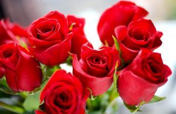
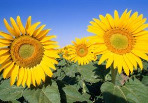

Flores
Flor é a estrutura reprodutora característica das plantas angiospérmicas. Sua função é produzir sementes através da reprodução sexuada. Para as plantas, as sementes representam o embrião que irá germinar quando entrar em contato com um substrato propício; as sementes são o principal meio através do qual as espécies de espermatófitas se perpetuam e se propagam.
Fonte: wikipedia
Tipos de Flores

Rosa

Girassol

Orquídeas
Voltar